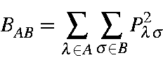
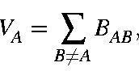

Next: Mulliken populations Up: Bond Orders Previous: Anisotropy


Next: Mulliken populations Up: Bond Orders Previous: Anisotropy
A measure of the number of bonds between atoms in a compound.

Typical bond-orders are: 1.0, e.g., C-C in ethane; 2.0, e.g., C=C in ethylene; 3.0, e.g., CC in acetylene. Bond orders of less than about 0.1-0.2 are indicative of "no bond".
The ideas here are an extension of Wiberg's indices [60].
Given the normal semiempirical density matrix, it is easy to show that
P2=2P,
from which it follows that

This is the starting point for the derivation of

from which the above definitions follow.